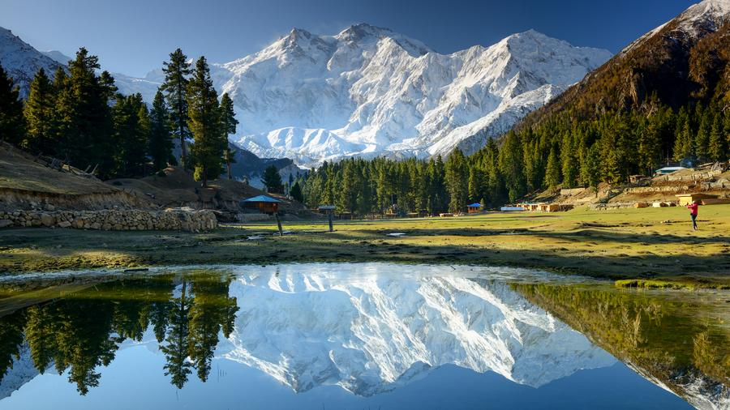

Valley of Wonder
Hunza Valley, nestled in the Karakoram mountains of Gilgit-Baltistan, is one of the most scenic destinations in the world. The valley is flanked by towering peaks including Rakaposhi (7,788 m), Ultar Sar (7,388 m), and Lady Finger (6,000 m). In spring, the valley transforms into a sea of pink and white as thousands of apricot and cherry trees bloom.
The people of Hunza are known for their warm hospitality, unique Burusho culture, and the Burushaski language spoken nowhere else on earth.

Karimabad, the main town of Hunza Valley, sits at an elevation of 2,438 metres above sea level. The valley is dominated by Rakaposhi, one of Pakistan's most recognisable peaks at 7,788 metres. The best time to visit is between April and June, when the apricot and cherry trees are in full bloom and the mountain views are at their most dramatic.
Things to Do
Apricot Blossom Festival
Visit in spring (March–April) to witness the entire valley covered in blossoming apricot trees — one of the most spectacular natural displays in Asia.
Baltit Fort
A 700-year-old fort perched above Karimabad, offering panoramic views of the valley and restored to showcase the history of the Hunza rulers.
Trekking
World-class trekking routes including the Karakoram Highway trek, Rush Lake (Pakistan's highest lake), and glacier hikes.
Local Cuisine
Try apricot oil, dried apricots, walnut cake, and the traditional Hunzai chapshuro (stuffed bread) — unique tastes found nowhere else.